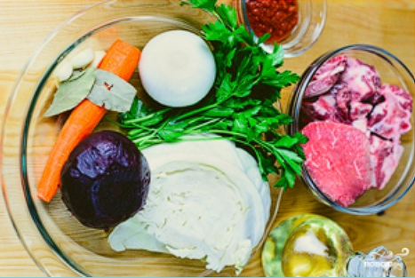
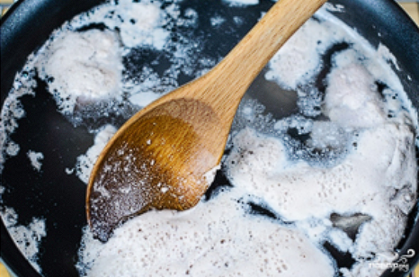
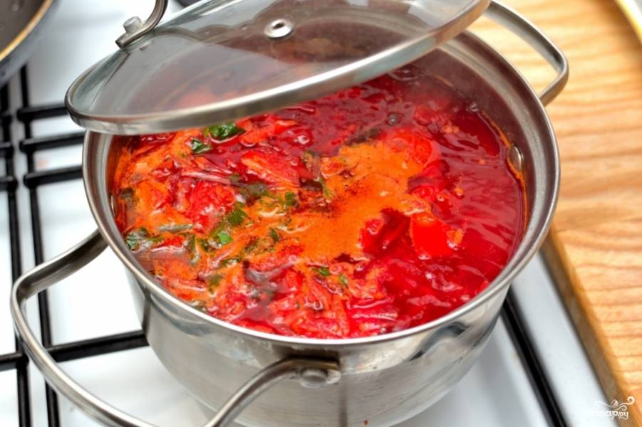

Borsch
Instructions
- Prepare all ingredients. 
- In a large pot, bring 2 liters of water to a boil. Add the beef and cook over low heat for about 1.5 hours, skimming off any foam that forms. 
- While the beef is cooking, heat the vegetable oil in a pan. Sauté the chopped onion and grated carrot until softened.
- Grate the boiled beet and add it to the pan along with the tomato paste. Cook for 5 more minutes, then set aside.
- Once the beef is ready, remove it from the pot and shred the meat, discarding the bones. Add the shredded meat back to the pot.
- Add the chopped cabbage, bay leaves, and salt to taste to the pot. Cook for 10-15 minutes.
- Add the sautéed vegetables (onion, carrot, beet) and minced garlic to the pot. Simmer for another 5-10 minutes. 
- Remove from heat, sprinkle with chopped parsley, and let the borscht sit for 10 minutes before serving.
- Enjoy your delicious borscht!
Ingredients
- 1kg beef (on the bone)
- 2 liters water
- 50 ml vegetable oil
- 1 beet (boiled)
- 1 onion
- 200g cabbage
- 1 carrot
- Parsley to taste
- 2 garlic cloves
- 2 bay leaves
- Salt to taste
- 2 tablespoons tomato paste